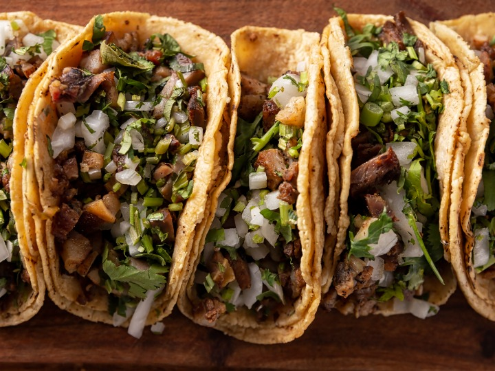

Tacos
Ingredientes:
- 250 grs de carne: puede ser peceto, nalga, la que más te guste
- 1 cebolla morada mediana
- 2 dientes de ajo
- 1 chile fresco (opcional)
- 1/2 pimiento o morrón verde
- Jugo de 1 lima o limón
- 1 tomate mediano
- Sal y pimienta
- tortillas
Pasos:
- Cortar la carne en tiritas y en un bol salpimentar, agregar la mitad del zumo de lima o limón y dejar macerando unos 20 minutos. Si quieren, en este paso pueden hacer la magia que les guste para darle sabor a la carne: ponerle mostaza, un chorro de cerveza… Lo que ustedes quieran. La idea es que los tacos de carne queden bien sabrosos así que todo vale.
- En una sartén poner un chorro de aceite, el chile seco y el orégano y calentar unos 2 o 3 minutos. Agregar el ajo y el chile y sofreír unos minutos más.
- Agregar la carne y saltear. Después de 5 minutos, a mitad de cocción, sumar el tomate y terminar de cocinar.
- Mezclar las dos preparaciones y rectificamos con sal y pimienta de ser necesario. Le agregamos el resto del zumo de lima o limón y el cilantro deshojado.
